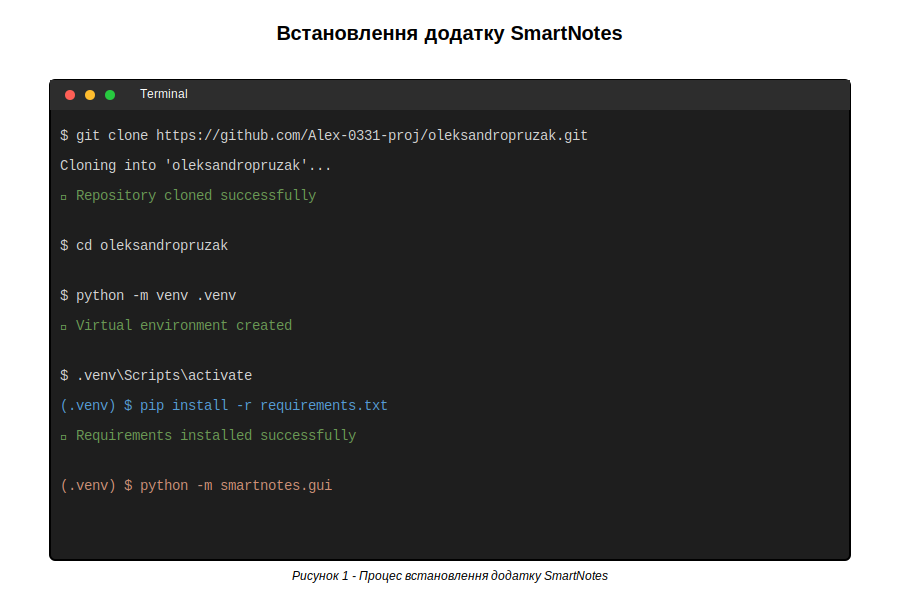
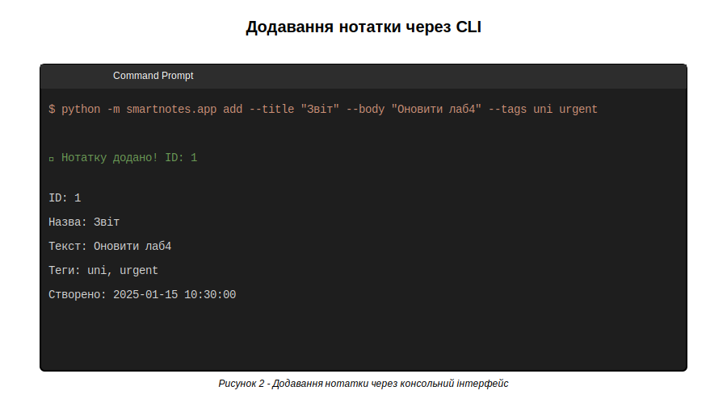
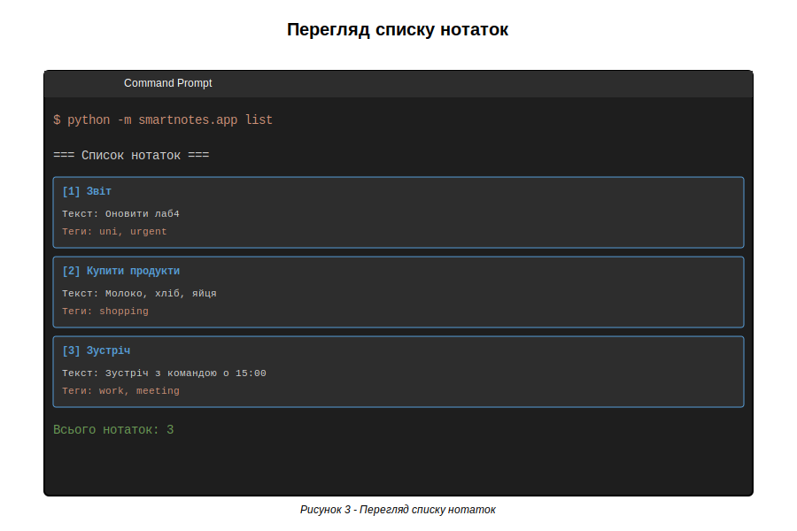
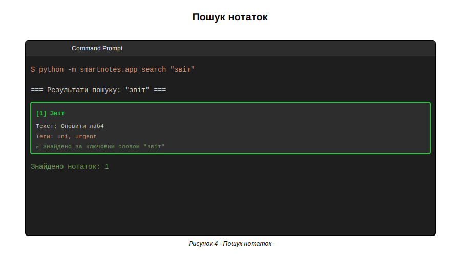
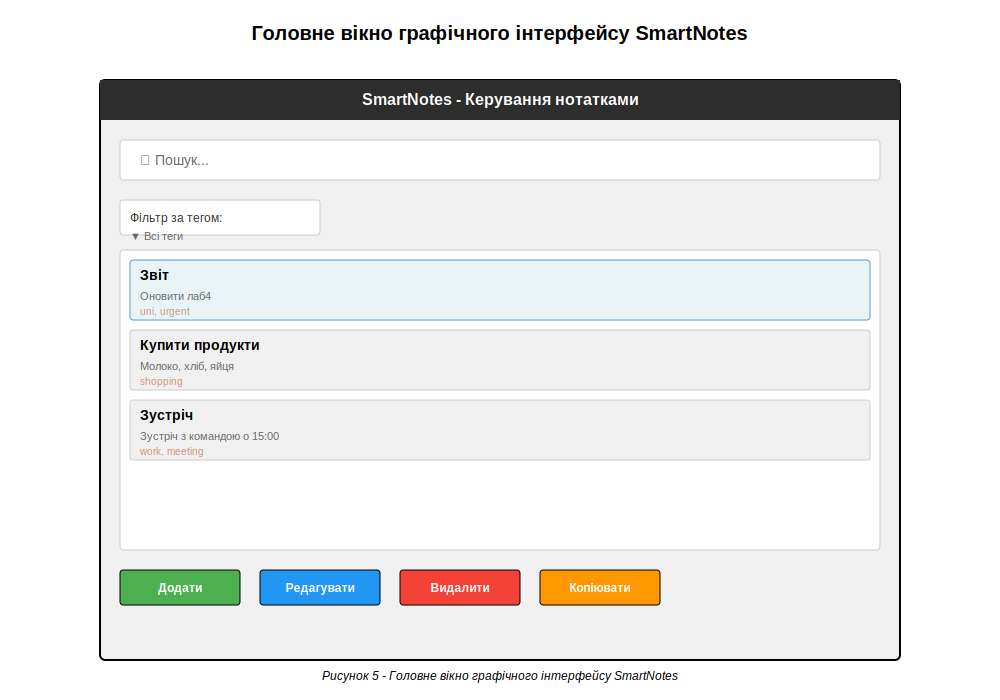
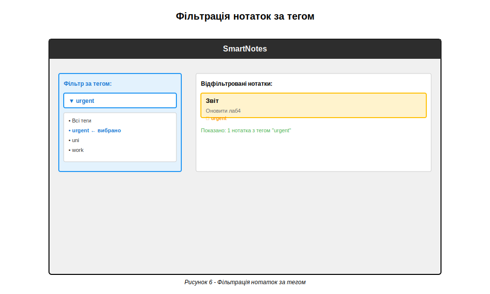
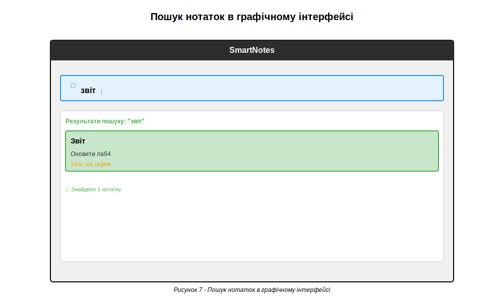
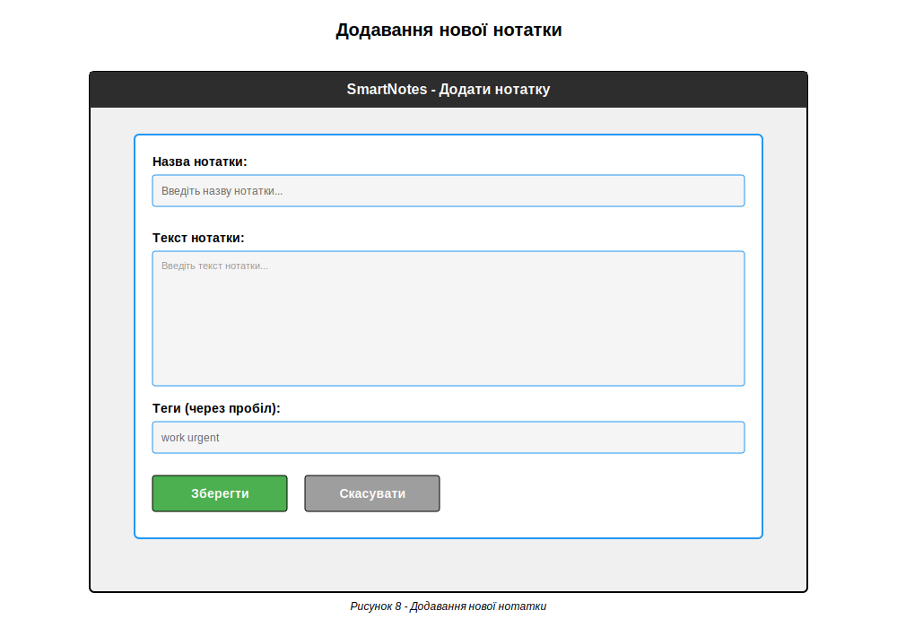
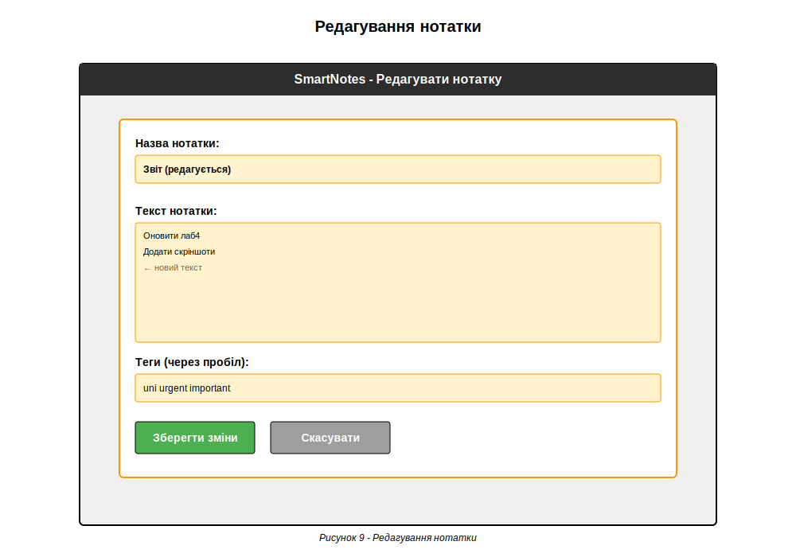

Отримати навички складання керівництва користувача програмного забезпечення.
SmartNotes - це простий додаток для керування нотатками з підтримкою тегів, пошуку та графічного інтерфейсу. Додаток дозволяє користувачам створювати, переглядати, редагувати та видаляти нотатки, а також організовувати їх за допомогою тегів та швидкого пошуку.
Для роботи з додатком SmartNotes необхідно:
Завантажте або клонуйте репозиторій з GitHub:
Створіть віртуальне середовище Python:
Для Windows (PowerShell):
Для Linux/Mac:
Встановіть необхідні залежності (якщо вони є):
Рисунок 1 - Процес встановлення додатку SmartNotes
Для додавання нової нотатки використовуйте команду:
Приклад:
Рисунок 2 - Додавання нотатки через консольний інтерфейс
Для перегляду всіх нотаток:
Для перегляду нотаток з певним тегом:
Рисунок 3 - Перегляд списку нотаток
Для пошуку нотаток за ключовим словом:
Приклад:
Рисунок 4 - Пошук нотаток
Для видалення нотатки необхідно вказати її ID:
Приклад:
Для запуску графічного інтерфейсу виконайте команду:
Рисунок 5 - Головне вікно графічного інтерфейсу SmartNotes
Фільтрація за тегом: Використовуйте випадаючий список "Фільтр за тегом" для відображення тільки нотаток з певним тегом. Виберіть тег зі списку або залиште "Всі теги" для перегляду всіх нотаток.
Рисунок 6 - Фільтрація нотаток за тегом
Миттєвий пошук: Введіть ключове слово в поле "Пошук" для миттєвого пошуку серед нотаток. Результати відображаються автоматично під час введення тексту.
Рисунок 7 - Пошук нотаток в графічному інтерфейсі
Додавання нотатки: Натисніть кнопку "Додати" та заповніть форму:
Рисунок 8 - Додавання нової нотатки
Редагування нотатки: Виберіть нотатку зі списку, натисніть "Редагувати", внесіть зміни та натисніть "Зберегти".
Рисунок 9 - Редагування нотатки
Видалення нотатки: Виберіть нотатку зі списку та натисніть кнопку "Видалити". Підтвердіть видалення у діалоговому вікні.
Копіювання тексту: Виберіть нотатку та натисніть "Копіювати" для копіювання тексту нотатки в буфер обміну.
Всі нотатки автоматично зберігаються у файлі data/notes.json. Файл створюється автоматично
при першому додаванні нотатки. Дані зберігаються у форматі JSON з підтримкою кирилиці.
Помилка: "No module named 'smartnotes'"
Рішення: Переконайтеся, що ви знаходитесь в правильній директорії та активовано віртуальне середовище.
Помилка: "File not found: data/notes.json"
Рішення: Файл створиться автоматично при першому додаванні нотатки. Якщо помилка повторюється,
створіть папку data вручну.
GUI не відкривається
Рішення: Переконайтеся, що встановлено Tkinter (зазвичай входить до складу Python).
Для Linux може знадобитися встановлення: sudo apt-get install python3-tk
Під час виконання лабораторної роботи було створено детальне керівництво користувача для додатку SmartNotes. Керівництво включає опис додатку, вимоги до системи, інструкції з встановлення, детальні інструкції з використання консольного та графічного інтерфейсів, приклади використання та розділ з вирішенням проблем.
Керівництво користувача оформлено у вигляді HTML-документа з наочними скріншотами та прикладами команд, що спрощує процес освоєння додатку новими користувачами. Документація покриває всі основні функції додатку та дозволяє користувачам швидко розпочати роботу з SmartNotes.